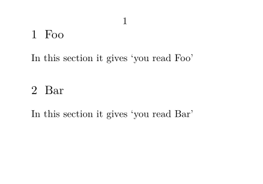
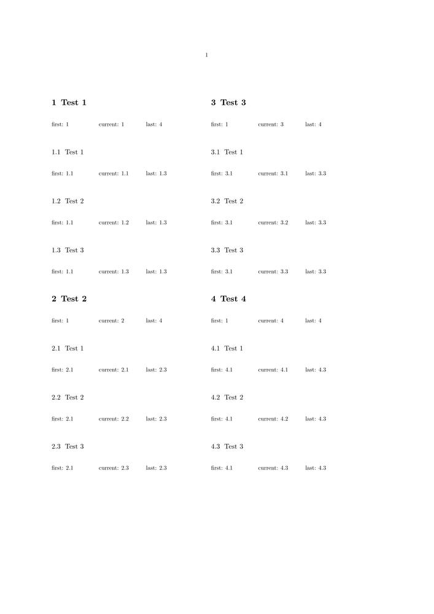

Contents
Define your own sectioning commands
Of course you can define your own sectioning commands and probably want to adapt the default settings.
-
\setuppapersize[A8] \definehead[myheader][section] \setuphead [myheader] [numberstyle=bold, textstyle=cap, before=\hairline\blank, after=\nowhitespace\hairline, align={flushleft, nothyphenated, verytolerant}] \starttext \startmyheader [title={Hasselt makes headlines}, reference=hasselt-ref] Text. \stopmyheader \stoptext
-

A new header \myheader is defined and it inherits the properties of \section (title, subject, whatever). You can define or setup several headers at once!
Section variable
You can set custom variables per section, and retrieve them with the \structureuservariable command:
-
\setuppapersize[A8,landscape] \starttext \startsection [title={Foo}] [varlook={you read Foo}] % extra brackets! In this section it gives \quote{\structureuservariable{varlook}} \stopsection \startsection [title={Bar}] [varlook={you read Bar}] % extra brackets! In this section it gives \quote{\structureuservariable{varlook}} \stopsection \stoptext
- 
Beware, if you want to reference these in your ToC setup, you need \structurelistuservariable.
Access to head number
To access the last head number in a document one can use:
\someheadnumber[…][…]
The following example from the mailing list demonstrates how to use it.
-
\setuppapersize[A4] \starttext \setuphead[section][style=\bfb] \setuphead[subsection][style=\tfa] \startcolumns[n=2] \dorecurse {4} { \startsection[title={Test \recurselevel}] \starttabulate[|p(2cm)|p(2cm)|p(2cm)|] \NC first: \someheadnumber[section][first] \NC current: \someheadnumber[section][current] \NC last: \someheadnumber[section][last] \NC\NR \stoptabulate \dorecurse {3} { \startsubsection[title={Test \recurselevel}] \starttabulate[|p(2cm)|p(2cm)|p(2cm)|] \NC first: \someheadnumber[subsection][first] \NC current: \someheadnumber[subsection][current] \NC last: \someheadnumber[subsection][last] \NC\NR \stoptabulate \stopsubsection } \stopsection } \stopcolumns \stoptext
- 
For using inside a Metapost-environment you can use the expandable version:
\somenamedheadnumber{…}{…}
Willi's comment on 15-06-2011: Sinds Context 13 june 2011 the name \somestructureheadnumber is replaced by \someheadnumber. This is in line with Hans' plans to get rid of the 'structure' part inside interface-names dealing with internal counters.
Generate a sorted of authors from headline content
An example on how to generate a sorted list of all authors contributed to a conference proceeding.
| TODO: does no compile as of 2025.01.18 (See: To-Do List) |
\setuphead [title] [page=no,command=,] \setuphead [chapter] [command=\MyChapCMD] \setuplist [chapter] [criterium=all,alternative=command,command=\MyChapListCMD] \definesorting[author][authors] \setupsorting [author][criterium=all,expansion=yes] \define[2]\MyChapCMD {#1\enspace #2 {\doifsomething {\structureuservariable{author}} \expanded{\author [\structureuservariable{name}] % -> sorted by "name"-variable {\bTABLE[width=broad] \bTR \bTD \structureuservariable{author} \eTD \bTD \structureuservariable{city} \eTD \bTD \structureuservariable{date} \eTD \bTD \structureuservariable{email} \eTD \bTD \structureuservariable{note} \eTD \eTR \eTABLE\nointerlineskip}% \tfxx (\structureuservariable{author}, \structureuservariable{city})}}} \define[3]\MyChapListCMD {#1 #2 (\structurelistuservariable{author})\hfill #3\blank} \starttext \showframe[text] \starttitle[title=Contents] \placelist[chapter] \stoptitle \starttitle[title=List of Authors in Alphabetical Order] \placelistofauthors \stoptitle \startchapter [title=Text by Ward] [name=ward, author=Peter D. Ward, city=Washington, email=ward@sample.com] \input ward \stopchapter \startchapter [title=Text by Zapf] [name=zapf, author=Hermann Zapf, city=Nürnberg, date=8. November 1918, email=zapf@sample.de] \input zapf \stopchapter \startchapter [title=Text by Bryson] [name=bryson, author=Bill Bryson, city=Norfolk, date={December 8, 1951}, note=best-selling American author] \input Bryson \stopchapter \startchapter [title=Text by Tufte] [name=tufte, author=Edward R. Tufte, city=Kansas City, date=1942, note=has criticized the way Microsoft PowerPoint is typically used] \input tufte \stopchapter \stoptext